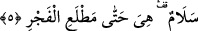

âyet-i kerimedeki ifâdeye benzemektedir: “Onun önünde ve arkasında Allah’ın
emriyle onu koruyan takipçiler (melekler) vardır.” (Ra’d, 13/11)
Âlimlerin ifâdesine göre Cebrâil o gece kalan rahmeti daru’l-harb’deki Allah
Teâlâ’nın müslüman olarak öleceğini bildiği kimselere dağıtır. İşte Kadir gecesi
dağıtılan bu rahmet sâyesinde küfür ülkesindeki bu kimseler müslüman olup, müslüman
olarak ölürler.
“Mukadderat o gece değil de senenin oniki ayında tamamlandığına göre o gecede
meleklerin bu iş için inmiş olması bir çelişki doğurmuyor mu?” sorusuna şöyle cevap
verilmiştir: Meleklerin o gece inmeleri bu işlerin yerine getirilmesini belirlemek
içindir. Onların her bir iş için inmeleri her bir meleğin her bir iş için inmesi anlamına
değildir. Tam tersine tümünün bütün işler için inmesi anlamınadır. Tâ ki ifâdede toplam
illetler, toplam mâlûllere yâni illetten meydana gelen şeylere taksim olmuş olsun.
5. O gece, esenlik doludur. Ta fecrin doğuşuna kadar.
Burada “selam” kelimesi haberdir. Haberin öne getirilmesi ifâdeye bir hasr; yâni
sâdece anlamını katmak içindir. Buna göre âyetin mânâsı; Kadir gecesi sâdece
selamettir. Yani o gecede hiçbir hastalık veya hiçbir kötülük ya da rüzgar, yıldırım vb.
korkulacak hiçbir afet meydana gelmez. Tam tersine o gece indirilen şeyin tamamı
selametten, esenlikten, faydadan, hayırdan ibarettir. O gece şeytan hiçbir kötülük
yapamaz, o gece hiçbir sihirbazın yaptığı sihir etkili olamaz. Gecenin kendisi selamet
değildir. Tam tersine gece selamet ve esenlik için bir zarftır. Bununla birlikte ifâdeye
mubalağa katmak için bu gece selamet kelimesiyle nitelenmiştir. Çünkü bu gece esenliği
içinde barındırmaktadır. Burdan anlaşılıyorki Kadir gecesinin dışında diğer gecelerde
esenlik de olabilir, belâ da olabilir. Allah’ın kazası Kadir gecesinin dışında bu iki
şeyden ikisine de taalluk edebilir. Bu âyete şöyle mânâ vermek de mümkündür: O gece
mü’minlere çok selam verildiği için bir selamdır. Kime selam isabet ederse onun
günahı bağışlanır. Bir hadis-i şerifte şu ifâdeler yer alır: “Kadir gecesi Cebrâil bir
grup melek arasında iner ve ibâdet etmekte olan veya Allah’ın zikriyle meşgul olan
her kula selam verip, duâ ederler.”
“Tan yeri ağırıncaya kadar” Tan yerinin ağırma vaktine kadar. Burada “vakit”
kelimesini tefsire kattık. Çünkü son nokta ile bundan önceki süre aynı olmalıdır. Âyette
yer alan “matla’” mim’li masdar olup tan yerinin ağırması demektir. Bu kelimeyi
“matli’” şeklinde okuyanlar tan yerinin doğma vaktinin ismi olarak kabul etmişlerdir.
Kelime ism-i zaman olarak kabul edilmiştir. Böylece kelime “iner” fiiline inme
hükmünün son noktası olmak üzere bağlanmış olur. Buna göre âyete mânâ verecek
olursak şöyle deriz: Melekler yeryüzüne inmek için beklediklerinde veya bitip tükenmez